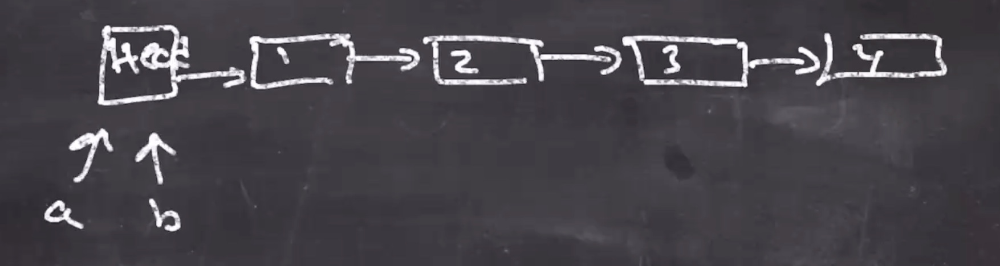

Strings in Java are an example of immutability.
Something like
s = s + "abc";
Actually creates a new object with the 2 new strings, and the reference to s is updated, but actual strings are immutable.
In Java a popular List class is LinkedList.

A change to either a or b will change both!
a.add(1, 5);b.get(1);
a = new List
b = a.cons(1)
cons stands for "construct new list from old."
c = b.cons(2)
This "creates a new view" of the list, without disturbing any older views of the list.
d = b.cons(3)
So a = [], b = [1], c = [2,1], d = [3,1].
e = d.rest()
rest gives back the list without the first element, so e = [1]
For efficiency and to keep views from changing, changes only happen at the front of the list.
empty is a constant for the empty listcons is the function that adds to the beginning of a list. (cons elem list) elem is element to be added, list is the list to be added to(rest nonemptylist) returns the list of everything but the first element(first nonemptylist) returns the first element of the list(empty? list) returns true or false (because the ? "huh?") if the list is empty(list 1 2 3) creates a list with elements 1 2 3, can also be alised as '(1 2 3)empty -- const for the empty list(cons elem list)(rest nonemptylist)(first nonemptylist)(empty? list)(list 1 2 3)'(1 2 3)
(empty? empty) ; true(empty? (list 1 2 3)) ; false(cons 3 empty) ; (list 3)(cons 2 (cons 3 empty) ; (list 2 3)(cons 1 (cons 2 (cons 3 empty))) ; (list 1 2 3)'(1 2 3) ; (list 1 2 3)(first '(1 2 3)) ; 1(rest '(1 2 3)) ; (list 2 3)
The if construct in Racket:
(if boolexprtrueexprfalseexpr)
Some pseudo for recursive functions:
if (very small)solve directlyelsemake recursive call (use smaller-solver)
For our problem:
if (empty list)return 0elsereturn 1 + listlen(list without front)
In racket:
(define (listlen xs)(if (empty? xs)0(+ 1 (listlen (rest xs)))))
Note
xsWe can then run this function via the interactions panel
(listlen empty) ; 0(listlen '(1)) ; 1(listlen '(1 1)) ; 2